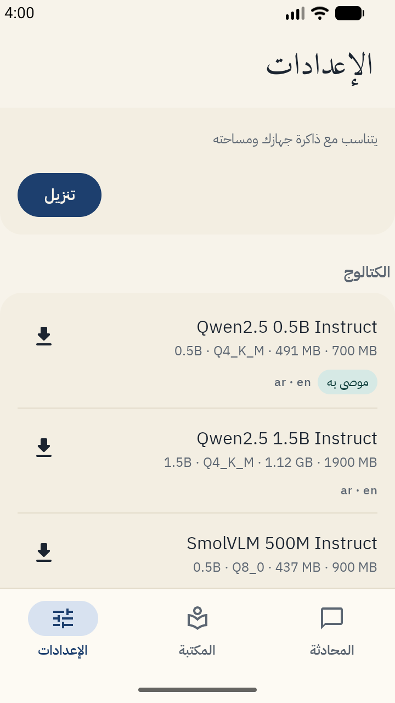
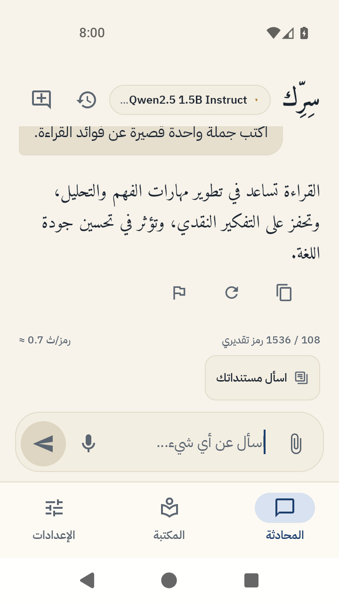
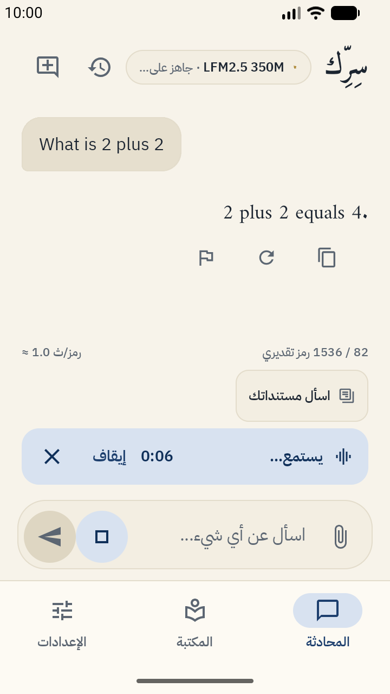

سِرِّك
Your own assistant.
It never leaves your phone.
Sirrak runs a real language model, Arabic dictation and document search on your Android phone. No account, no cloud, no telemetry — every network request is one you start: a model download, a Hugging Face search, or a capped file-header check.

- 1Offline switch
- 2Model on device
- 3Arabic-first layout
The first ten minutes
Four numbered moves take you from a fresh install to an assistant that answers without a network. Every screenshot below is the shipping build on a real emulator, not a mockup.
-
Bring a model — or start with the demo
Onboarding recommends a model that fits your phone and downloads it with resume and a checksum. No model is bundled: every catalogue entry shows its licence before you download it.
Recommended for your device, with licence shown up front

-
Ask in Arabic and watch the answer stream
Chat runs on-device through llama.cpp. Stop mid-answer, regenerate, or start a clean conversation; the transcript survives process death and can be exported as Markdown.
Tokens per second are measured, not estimated

-
Dictate instead of typing
On-device Whisper transcribes Arabic or English. The recording strip keeps a live timer while it listens; the transcript is appended to the composer — never sent on its own — and the audio never leaves the phone.
The compose bridge: speech lands as text you can edit

-
Own the network
Turn on offline-only and the app cannot open a socket, including model downloads. The network log lists the calls that actually happened on this device, bounded to 50 entries and never uploaded.
No background calls: every network request is one you start

What is in the box
Everything below ships in the same Apache-2.0 app. Nothing needs an account, and nothing phones home.
-
Local chat
Streaming answers from a GGUF model, multiple conversations with search and rename, Markdown rendering, per-conversation prompts and stop sequences.
-
Arabic & English dictation
sherpa-onnx Whisper on the device, a recording strip with a live timer, and a transcript that waits in the composer until you send it.
-
Answers from your documents
Import PDF, DOCX, EPUB, Markdown or text, index locally, and ask with citations you can open — retrieval is embeddings plus Arabic BM25.
-
Model control
A curated catalogue with device-aware recommendations (including a compact 2 GB tier), resumable checksum-verified downloads, a storage manager and Hugging Face import.
-
Engine control
Temperature, top-p, top-k, repeat penalty, context size, chat templates and prompts — data layers whose effective values are provable in one log line.
-
Privacy surfaces
Offline-only enforcement, a per-call network audit, local AI-output reports with an explicit share step, and honest status instead of dead links.
Verified, not claimed
The release candidate is covered by committed tests and reproducible gates. These are the numbers the repository can defend.
- JVM unit tests 560 0 failures across 9 modules, the same selection CI runs
- Arabic evaluation 24/24 normalisation, sentence splitting, BM25 and negative controls
- Android lint 0 errors 36 reviewed warnings, no suppressions for this surface
- Network calls when idle none the audit shows only user-started downloads
- APK signature v2 certificate SHA-256 4537 ECEB 9952 AC90 … verified with apksigner
- Dependencies 22 CycloneDX 1.5 SBOM generated from the shipped licence registry
Privacy you can check, not just read
A privacy promise is worth what its evidence is worth. Sirrak declares its endpoints in configuration, audits the calls that actually happen, and gives you a switch that stops the app at the socket.
Read the full privacy policy-
No telemetry, ever
No analytics, no crash service, no ads, no account. There is no server to receive your conversations, documents or reports.
-
A network log on the device
Every call that actually happened appears in a bounded local log — written for you, never uploaded, cleared with the app's data.
-
Offline-only is enforced first
The switch is checked before a socket opens and cancels a running download instead of queuing it.
-
Storage stays app-private
Chats, documents, embeddings, models and settings live in app-private storage; sharing only happens through the Android chooser you invoke.
Download and verify
The published libre APK is signed with the project certificate and built from the 1.0.0-rc2 tag. The 1.1.0 features described on this page are not in that build yet: its signed release is still pending. You can verify the published build before installing.
-
Get the signed APK
Open the latest release on GitHub and download the signed 1.0.0-rc2 libre APK (~139 MiB, universal arm64-v8a + x86_64).
-
Verify the certificate
Run apksigner verify --print-certs and compare SHA-256 with the fingerprint below. SHA-256 checksums are in the release notes.
-
Install, pick a model, go offline
Android 9+ is required. Choose a model in onboarding or start with the demo engine, then switch offline-only when you are ready.
Where it is published
Honest status beats a badge that is not true yet.
- GitHub Releases available signed 1.0.0-rc2 libre APK for sideloading; the signed 1.1.0 release is pending
- F-Droid planned the pinned prebuilt sherpa-onnx runtime still needs a source build in the F-Droid recipe
- Google Play closed testing next the Play bundle exists and is signed; the listing waits for closed testing
Questions people actually ask
Does it really work offline?
Yes. After you import or download a model, the chat, dictation, document search and settings run without a network. Offline-only mode blocks every request and cancels a running download.
Is it free? What is the catch?
Sirrak is free software under Apache-2.0, with no accounts, ads or telemetry. Models are not bundled and may carry their own licences; gated models need your own Hugging Face token, kept in memory only.
Which phones are supported?
Android 9 (API 28) or newer on arm64. The x86_64 build is for emulators and development. The app warns before a download that would leave too little storage.
Where do the models come from?
A curated catalogue with recommendations (Qwen2.5, LFM2.5 350M for 2 GB phones and other GGUF models), a local GGUF import, or a Hugging Face repository import. Every model's licence is shown before download; nothing is bundled.
Why is the APK 139 MiB?
The native llama.cpp and sherpa-onnx runtimes are compiled into the app, so it works without extra downloads. Model weights are separate and can be several hundred MiB.
How do I know the claims are true?
The source, build records, tests, screenshots and release signatures are public in this repository. The website itself is generated from committed data and has no third-party scripts.
Read the record
The project keeps public build records: what was built, how it was verified, and what is still limited.
- Build records 20 documents, from the M1 shell to the launch checklist
- Architecture modules, the plugin runtime and typed slots
- Launch checklist what is done and what is blocked on accounts
- Design system Girih & Ink: palette, type, RTL and motion